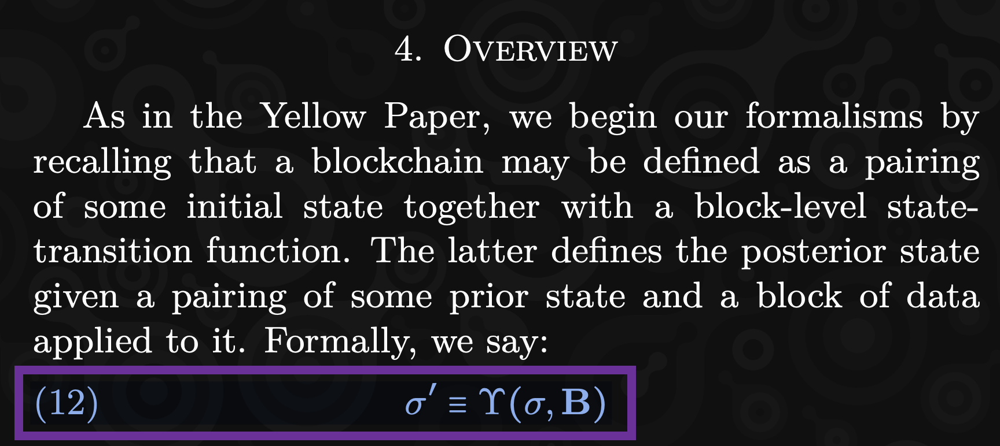
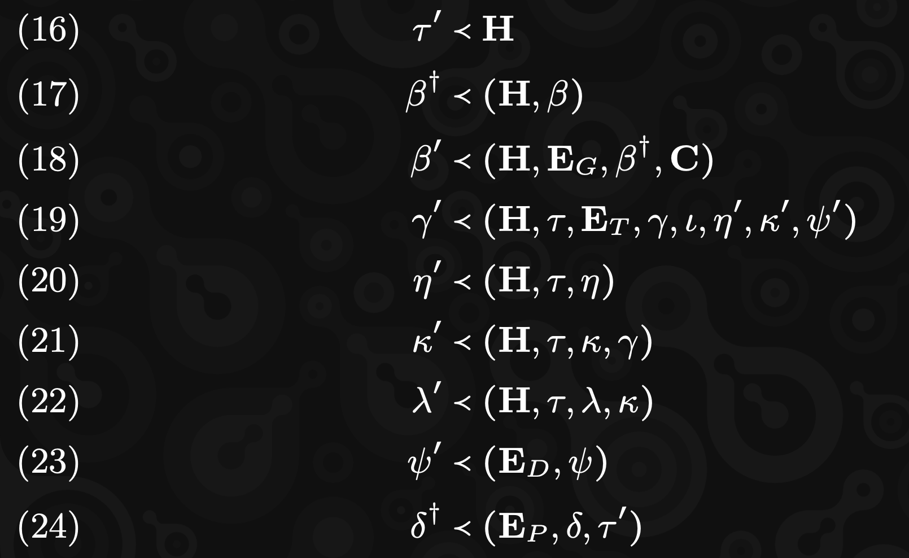
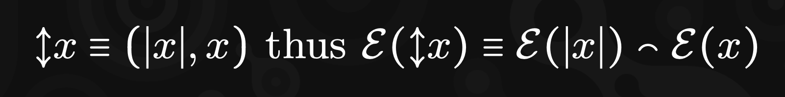
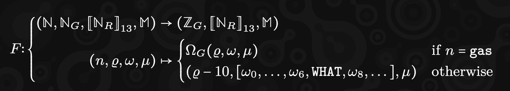

<!DOCTYPE html>
<html lang="en">

<head>
  <meta charset="utf-8" />
  <meta name="viewport" content="width=device-width, initial-scale=1.0, maximum-scale=1.0, user-scalable=no" />

  <title>JAM - Transforming Math Formulas into Code</title>
  <link rel="icon" href="./../../assets/favicon.svg" />
  <link rel="shortcut icon" href="./../../assets/favicon.png" />
  <link rel="stylesheet" href="./../../dist/reset.css" />
  <link rel="stylesheet" href="./../../dist/reveal.css" />
  <link rel="stylesheet" href="./../.././assets/styles/PBA-theme.css" id="theme" />
  <link rel="stylesheet" href="./../../css/highlight/shades-of-purple.css" />

  <link rel="stylesheet" href="./../.././assets/styles/custom-classes.css" />

</head>

<body class="site">
  <header class="site-header">
    <!-- This logo is a link only on the watching server, not the production build -->
    <a href="">
      
    </a>
  </header>
  <main class="reveal">
    <article class="slides">
      <section  data-markdown><script type="text/template">

## What is this talk NOT About?

- What is JAM 🚫
- Why JAM is useful 🚫
- How JAM is different from Polkadot 🚫
</script></section><section  data-markdown><script type="text/template">
## What is this talk About?

- Hands-on approach ✅
- Read (and understand) math formulas ✅
- Implement JAM in actual code ✅
</script></section><section  data-markdown><script type="text/template">
## JAM Crypto Innovations


</script></section><section  data-markdown><script type="text/template">
## JAM Crypto Innovations

<!--  .slide: data-visibility="hidden" -->

- Polkadot Virtual Machine (PVM) - RISC-V
- Erasure Coding DA
- VRF Ring Signatures / Bandersnatch
- In-core + on-chain
- Parallel Execution
  - Each Core runs different computing jobs
  - State components updated in parallel
- Safrole and Grandpa - less forks
</script></section><section  data-markdown><script type="text/template">
# Formal Specification
</script></section><section  data-markdown><script type="text/template">
## PVM


</script></section><section  data-markdown><script type="text/template">
## Erasure Coding


</script></section><section  data-markdown><script type="text/template">
## Bandersnatch


</script></section><section  data-markdown><script type="text/template">
## Block Structure


```rust
struct Block {
    header: Header,
    extrinsic: Extrinsic,
}
```
</script></section><section  data-markdown><script type="text/template">
## Extrinsic Structure


```rust
struct Extrinsic {
    tickets: Vec<Ticket>,
    disputes: Disputes,
    preimages: Vec<Preimage>,
    assurances: Vec<Assurance>,
    guarantees: Vec<Guarantee>,
}
```
</script></section><section  data-markdown><script type="text/template">
## State Structure


```rust
struct State {
    authorizer_pool: Vec<Vec<Hash>>,         // α
    recent_history: RecentHistory,           // β
    safrole: Safrole,                        // γ
    services: HashMap<u64, ServiceAccount>,  // δ
    entropy_pool: EntropyPool,               // η
    ...
}
```
</script></section><section  data-markdown><script type="text/template">
## State Transition Function



```rust
let new_state = state_transition(state, block)

fn state_transition(state: &State, block: Block) -> State {
  // Logic to update state with new block
}
```
</script></section><section  data-markdown><script type="text/template">
## State Dependencies



```rust
let timeslot_ = get_timeslot(h);
let history_daga = get_history_data(h, &state.recent_history);
let history_ = get_history_(h, &ext.tickets, &history_daga, c);
```
</script></section><section  data-markdown><script type="text/template">
## Data Encoding


```rust
trait Encode {
    fn e(&self) -> Vec<u8>;
}

impl Encode for Vec<u8> {
    fn e(&self) -> Vec<u8> {
        self.clone()
    }
}

```
</script></section><section  data-markdown><script type="text/template">
## Data Encoding



```rust
struct VariableSize<T> {
    size: usize,  // Assuming size is stored as usize
    value: T,     // Generic type to allow flexible values
}

impl<T: Encode> Encode for VariableSize<T> {
    fn encode(&self) -> Vec<u8> {
        let mut encoded = Vec::new();
        encoded.extend(self.size.to_le_bytes()); // Encode size as bytes
        encoded.extend(self.value.encode());     // Encode the actual value
        encoded
    }
}
```
</script></section><section  data-markdown><script type="text/template">
## Block Encoding


```rust
impl Encode for Block {
    fn encode(&self) -> Vec<u8> {
        let mut encoded = Vec::new();
        encoded.extend(self.header.encode());
        encoded.extend(self.extrinsic.encode());
        encoded
    }
}

impl Encode for Extrinsic {
    fn encode(&self) -> Vec<u8> {
        let mut encoded = Vec::new();
        encoded.extend(self.tickets.encode());
        encoded.extend(self.disputes.encode());
        ...
        encoded
    }
}
```
</script></section><section  data-markdown><script type="text/template">
## PVM



```rust
fn f(
      n: u64,
      gas: u64,
      mut registers: Vec<u64>,
      memory: Memory
) -> (u64, Vec<u64>, Memory) {
  if n == GAS {
      return Host::remaining_gas(gas, registers, memory);
  }
  registers[7] = WHAT;
  (gas.saturating_sub(10), registers, memory)
}
```
</script></section><section  data-markdown><script type="text/template">
## Conclusion

- Start coding to understand JAM from a developer's perspective
- Faster development
- Functional alignment with math
- Learn Elixir, as its functional features reduces learning curve
</script></section>
    </article>
  </main>

  <script src="./../../dist/reveal.js"></script>

  <script src="./../../plugin/markdown/markdown.js"></script>
  <script src="./../../plugin/highlight/highlight.js"></script>
  <script src="./../../plugin/zoom/zoom.js"></script>
  <script src="./../../plugin/notes/notes.js"></script>
  <script src="./../../plugin/math/math.js"></script>

  <script src="./../../assets/plugin/mermaid.js"></script>
  <script src="./../../assets/plugin/mermaid-theme.js"></script>

  <script src="./../../assets/plugin/chart/chart.js"></script>
  <script src="./../../assets/plugin/chart/chart.min.js"></script>

  <script src="./../../assets/plugin/tailwindcss.min.js"></script>

  <script>
    function extend() {
      var target = {};
      for (var i = 0; i < arguments.length; i++) {
        var source = arguments[i];
        for (var key in source) {
          if (source.hasOwnProperty(key)) {
            target[key] = source[key];
          }
        }
      }
      return target;
    }

    // default options to init reveal.js
    var defaultOptions = {
      controls: true,
      progress: true,
      history: true,
      center: true,
      transition: 'default', // none/fade/slide/convex/concave/zoom
      slideNumber: true,
      mermaid: {
        startOnLoad: false,
        logLevel: 3,
        theme: 'base',
        themeVariables: {
          primaryColor: purple,
          primaryTextColor: white,
          primaryBorderColor: pink,
          lineColor: pink,
          secondaryColor: lightPurple,
          tertiaryColor: lightPurple,
        },
      },
      chart: {
        defaults: {
          color: 'lightgray', // color of labels
          scale: {
            beginAtZero: true,
            ticks: { stepSize: 1 },
            grid: { color: "lightgray" }, // color of grid lines
          },
        },
        line: { borderColor: ["#ccc", "#E6007A", "#6D3AEE"], "borderDash": [[5, 10], [0, 0]] },
        bar: { backgroundColor: ["#ccc", "#E6007A", "#6D3AEE"] },
      },
      plugins: [
        RevealMarkdown,
        RevealHighlight,
        RevealZoom,
        RevealNotes,
        RevealMath,
        RevealMermaid,
        RevealChart
      ]
    };

    // options from URL query string
    var queryOptions = Reveal().getQueryHash() || {};

    var options = extend(defaultOptions, {"width":1400,"height":900,"margin":0,"minScale":0.2,"maxScale":2,"transition":"none","controls":true,"progress":true,"center":true,"slideNumber":true,"backgroundTransition":"fade"}, queryOptions);
  </script>


  <script>
    Reveal.initialize(options);
  </script>
</body>

</html>
